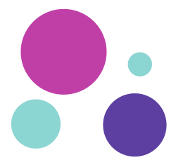

Fundacja Kochasz Dopilnuj
Home
O nas
Jak działamy?
#PomacajSie
#BadajJajka
Materiały
Kontakt
Do pobrania
Materiały
Dokumenty i materiały szkoleniowe Fundacji Kochasz Dopilnuj.
← Wróć do strony głównej
DOCX
Zgoda na wykorzystanie wizerunku
Pobierz
AVI
Film ze szkolenia
Pobierz